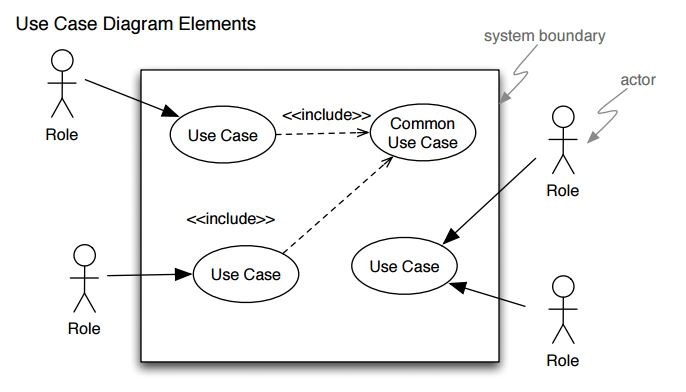
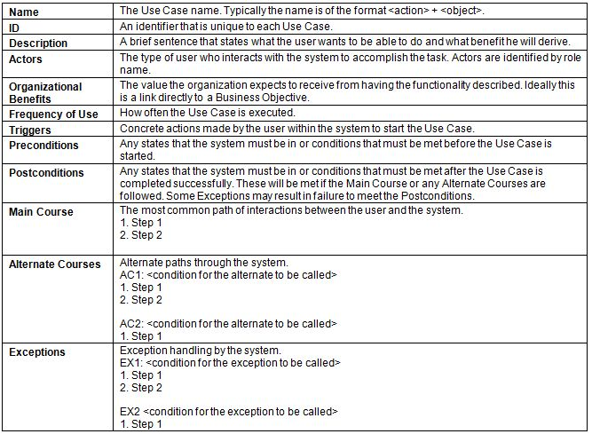

What is software engineering? It is a branch of systems engineering concerned with the development of large and
complex software intensive systems. It focuses on real world goals for, services provided by, and
constrains on such systems. There is also the precise specification of systems structure and
behaviour , and the implementations of these specifications. Furthermore, the activities required in
order to develop an assurance that the specifications and the real world goals have been met.
Also the evolution of these systems over time, and across systems families. It is also concerned
with the processes, methods and tools for the development of software intensive systems in an
economic and timely manner.
Problems in system development may come from either the End-user's perspective, the Client's
perspective, or the Developer's perspective.
Problems: End-user
System is not finished
System has poor design, hard to use, poor interface, useless 'help'
System is pretty but not useful
Problems: Client
Project is overbudget
Project is delivered late
Project is no longer needed
System is not trustworthy or safe to use
Problems: Developer
Clients changed their minds
There is not enough time to complete the project
Development is disturbed by changing technology
Developer does not have the necessary skills to fix or develop
And sometimes, the system works fine but it's just the user with the problems
Things go wrong because of two reasons: Quality and Productivity
Quality
The wrong problem is addressed so the system conflicts with business strategy
The context is neglected
The project has poor software engineering – incorrect analysis or design, or the team simply lack
skills
The project is carried out for the wrong reason
Productivity
The client needs change over time, so there is always a requirements drift
External event changes the environment, e.g. legislation, change in technology
Poor project management
Implementation not feasible with over ambitious aims
Software Engineering is one of the most technically challenging and practically demanding subjects in computer science. It addresses problems which are faced by day-to-day practitioners.
2 – Software Process Models
A structured set of activities required to develop a software system. It consists of Specification, Design, Validation, Evolution. A software process model is an abstract representation of a process. It presents a description of a process from some particular perspective.
Process models:
Waterfall Model: Separate and distinct phases of specification and development.
Evolutionary Development: Specification, development and validation are interleaved.
Component-based Soft Eng: The system is assembled from existing components.
2.1 ‐ Waterfall Model
Requirements analysis and definition
The process of establishing what services are required and the constraints on the system's operation and development.
Requirements Engineering Process, which includes feasibility study, requirements elicitation and analysis, requirements specification, requirements validation.
System and software design a structure that realises the specification
Architectural design
Abstract specification
Interface design
Component design
Data structure design
Algorithm design
And so on...
Implementation and unit testing
Have to already produce executable code.
Unit testing individual components for functions, classes or programs independently.
Components may be functions or objects or coherent groupings of these entities.
Integration and system testing
System testing: Testing the system as a whole. Testing of emergent properties is particularly important.
Acceptance testing: Testing with customer data to check that the system meets the customer's needs.
Operation and maintenance to keep the system going.
Problems of Waterfall Model
One phase has to be complete before moving on to the next phase.
Inflexible partitioning of the project into distinct stages makes it difficult to respond to changing customer requirements. Therefore this model is only appropriate when the requirements are well understood and the changing will be fairly limited during the design process.
But only a few business systems have stable requirements.
2.2 – Evolutionary Development
Specification, development and validation is all concurrently ongoing.
Exploratory development: To work with customers and to evolve a final system from an initial outline specification. Start with well understood requirements and add new features as proposed by the customer.
Throw-away prototyping: To understand the system requirements. So should start with poorly understood requirements to clarify what is really needed.
Problems with Evolutionary Development
Lack of process visibility
Systems are often poorly structured
Special skills such as in languages for rapid prototyping may be required
May not be applicable for small or medium-sized interactive systems
May not be applicable for parts of large systems like the user interface
May not be applicable for short-lifetime systems
2.3 – Component-based Software Engineering
This is based on systematic reuse where systems are integrated from existing components or Commercial-off-the-shelf (COTS) systems.
Process stages include component analysis, requirement modification, system design with reuse, and development and integration. Reuse-oriented development
Process Iteration
System requirements ALWAYS evolve in the course of a project, so process iteration where earlier stages are reworked is always part of the process for large systems. Iterations can be applied to any of the generic process models.
2.4 – Incremental Delivery
Rather than deliver the system as a single delivery, the development and delivery is broken down into increments with each increment delivering part of the required functionality.
User requirements are prioritised and the highest priority requirements are included in early increments. Once the development of an increment is started, the requirements are frozen through for later increments to evolve.
The advantage of this development style
Early increments act as a prototype to help elicit requirements for later increments.
Lower risk of overall project failure.
The highest priority system services tend to receive the most testing.
Customer value can be delivered with each increment so system functionality is available earlier.
2.5 – Spiral Development
The process is represented as a spiral rather than as a sequence of activities with backtracking. Each loop in the spiral represents a phase in the process. There are no fixed phases such as specification or design – loops in the spiral are chosen depending on what is required. Risks are explicitly assessed and resolved throughout the process.
2.6 – Rational Unified Process (RUP)
There are four RUP phases
Inception: Establish the business case for the system.
Formulating the scope of the project.
Planning and preparing the business case.
Synthesizing a candidate architecture.
Preparing the environment for the project.
Elaboration: Develop an understanding of the problem domain and the system architecture.
Defining, validating the baseline architecture.
Refining the vision.
Creating detail of iteration plans for the construction phase.
Refining the development case and putting in place the development environment.
Refining the architecture and selecting components.
Construction: System design, programming and testing.
Resource management, control and process optimisation.
Complete component development and testing against the defined evaluation criteria.
Assessment of product releases against acceptance criteria for the vision.
Transition: Deploy the system in its operating environment.
Executing deployment plans.
Finalising end-user support material.
Testing the deliverable product at the development site.
Creating a product release and getting user feedback.
Fine-tuning the product based on feedback.
Making the product available to end-users.
3 – Requirements Engineering (RE)
Requirements form the basis for Project Planning, Risk Management, Acceptance Testing and Change Control.
Most project's critical issues are in the requirements area. Major gaps in Requirements tend to be critical to a project success. Producing a good set of requirements is likely the most difficult job in software system development.
Recurring problems
Lack of functional requirements by either no requirements have been written, usage scenario not understood and documented, functionality of the system incomplete, customer not known and not contacted, or no acceptance criteria for the system.
Lack of performance and capacity requirements: Number and/or types of users undocumented, transaction and data volumes unknown.
Lack of operations, administration and management requirements.
Good requirements describe what the system is supposed to do, not how the system is supposed to do it. Remember the 5W's and one H.
Requirements are not a description of how the system provides the needed functionality. Requirements should not specify technology or implementation except where those items are customer constraints. Requirements should not contain assumptions, should not be indecisive with words like "would", "could", "flexible" in the document. The item will or will not be in the system. Requirement should not be inconsistent or conflicting too.
Requirements are description of what the entire system is supposed to do:
Reflective of customer need
Constraints imposed by the customer
Constraints imposed by business and marketing needs
Unambiguous (clear and concise)
Complete
Prioritised
Traceable, meaning able to be followed
Implementable within project constraints like schedule and budget
Formally accepted by the customer, systems engineering and development, system test, and under change control
Requirements are sometimes referenced for contacts, and also sometimes considered to be contract between systems engineering and development.
Customer and end-user are not always the same person. The end-user is the person who interacts with the system to get the job done, while the customer typically pays for the system. They may have similar or conflicting objectives. Sometimes delighting your end-user delights the customer, but remember that the customer pays for the job. So it is very important to get the customer involved in the initial phase of RE, if at all possible.
3.1 – Software Development Lifecycle (SDLC)
We have the V Model: If problems are found during Verification or Validation phase, the LHS of the V is re-executed to fix the problem.
Prototyping allows all or part of the system to be constructed quickly in the hopes of clarifying and understanding issues. Iterate requirements and design to ensure common understanding.
Role of requirements engineering
Requirements influence the whole development from the start to end. Testing is with respect to the requirements. A system is accepted against Stakeholder's requirements during Acceptance Test Phase as shown in the image below.
RE provides communication amongst projects. Requirements traceability refers to the ability to understand how high-level requirements (goals, objectives etc) are transformed into low-level requirements (mapping between layers of information: one-to-many usually). It is the ability to assess impact changes introduced at various phases of development lifecycle, and the ability to track progress. Stakeholders req. met by system req → partitioned into subsystem req → implemented as components
Traceability is the use of requirements management tools to link requirements statements in on layer with statement in another.
Main requirements activities include
Requirements inception
Requirements analysis
Requirements specification
Requirements verification and validation
Requirements management
Requirements documents
4 – Systems
A system is an organised or complex whole: an assemblage or combination of things or parts forming a complex or unitary whole. It is also a set of interrelated elements.
If the elements of a system are of a reasonable degree of complexity, which made them systems, then we call them sub-systems.
The environment of a system is the set of elements which are NOT part of the system, but a change in any of which can produce a change in the state of the system.
4.1 – Critical Systems
Critical system is a system where failure can lead to high economic loss, physical damage, or threats to life. There are three critical systems:
Safety-critical
Failure results in loss of life, injury or damage to the environment.
E.g. Chemical plant protection system
Mission-critical
Failure results in failure of some goal-directed activity.
E.g. Spacecraft navigation system
Business-critical
Failure results in high economic loss.
E.g. Customer accounting system in a bank
It is usually the case that the most important system property is the dependability of the system. The dependability of a system reflects the user's degree of trust in that system. It reflects the extent of the user's confidence that it will operate as users expect and that it will not fail in normal use.
Systems that are not dependable (unreliable, unsafe, insecure) may be rejected by their users. The cost of critical system failure may be very high such that development method may be used for other types of system.
Socio-technical in an organisational development is an approach to complex organisational work design that recognises the interaction between people and technology in workplaces.
Hardware failure
Design and manufacturing errors.
Components have reached the end of their natural life.
Software failure
Errors in its specification, design or implementation.
Operational failure
Human operators make mistakes.
4.2 – Dependability
Dependability of a system equates to its trustworthiness. The principal dimensions of dependability are:
Availability
Probability that the system will be available to deliver services when requested.
Reliability
Probability that system services will be delivered as specified.
Safety
The ability of the system to operate without catastrophic failure.
Security
The ability of the system to protect itself against accidental or deliberate intrusion.
Repairability
Reflects the extent to which the system can be repaired in the event of a failure.
Maintainability
Reflects the extent to which the system can be adapted to new requirements.
Survivability
Reflects the extent to which the system can deliver services whilst under hostile attack.
Error tolerance
Reflects the extent to which the user-input errors can be avoided and tolerated.
Untrustworthy systems may cause loss of valuable information. It may be rejected by their users and failures cost very high.
There will be trade-offs between performance and dependability.
The costs tend to increase exponentially as increasing levels of dependability are required. This is because of:
Use of more expensive development techniques
Increased testing and system validation
Safety is the system's ability to operate without danger of causing human injury or death and without damage to the system's environment.
Security of a system is the system's ability to protect itself from accidental or deliberate external attack. It is an essential pre-requisite for availability, reliability and safety.
Damages that can be done from insecure systems:
Denial of service (DOS)
Corruption of programs or data
Disclosure of confidential information
4.3 – Faults and Failures
There are some terminologies related to reliability:
System Failure
An event that occurs at some point in time when the system does not deliver a service as expected by its users.
System Error
An errorneous system state that can lead to system behavior that is unexpected by system users.
System Fault
A characteristic of a software system that can lead to a system error. E.g. failure to initialise a variable leading to null pointers.
Human Error
Human behaviour that results in the introduction of faults into a system.
Failures are usually a result of system errors that are derived from the faults in the system. Faults do not necessarily result in system errors. Errors do not necessarily lead to system failures.
Fault avoidance development techniques are used to minimise the possibility of mistakes or trap mistakes before they result in faults.
Fault detection and removal verification and validation techniques are used to detect errors before the system goes into service.
Fault tolerance runtime techniques are used to ensure that system faults do not result in system errors which do not lead to system failures.
5 – Rapid and Extreme Programming
5.1 – Rapid Software Development (RSD)
RSD is due to the fact that business environments always change, so the business have to respond to new opportunities and competition. This is normally used for small and medium sized systems.
Characteristics
Processes of specification, design and implementation are concurrent.
System is developed in a series of increments.
End-users evaluate each increment and make proposals for later increments.
Things may easily go wrong so best suited for experienced and skillful development teams.
Waterfall model is impractical here.
Iterative development process
5.2 – Agile Methods
Focus on the code rather than design
Iterative approach
Intended to deliver working software quickly and evolve quickly
Agile methods are best suited to small or medium sized business systems.
Principles of Agile Methods
Customer involvement
Customers are to provide and prioritise new requirements and evaluate iterations.
Incremental delivery
Software is developed in increments.
People not Process
Team members should be allowed to develop their own ways of working.
Embrace Change
Design the system to accommodate constant changes.
Maintain Simplicity
Actively work to eliminate complexity from the system.
Problems with Agile Method
Can be difficult to keep the interest of involved customers.
Team members not suited for the method.
Prioritising changes can be difficult where there are multiple stakeholders.
Maintaining simplicity requires extra work.
Contracts
Extreme Programming (XP)
This is an agile method that takes an 'extreme' approach to iterative development.
New versions may be built several times per day.
Increments are delivered to customers every 2 weeks.
Build is only accepted if tests run successfully.
Five Values of XP
Communication
Nothing can be done well without communicating.
Simplicity
Do the simplest thing that could possibly work.
Feedback
Put valuable requirements into production as early as possible.
Courage
Do the right thing! Throw away code that is no longer needed.
Respect
Team members must respect other's work.
The XP Release Cycle
XP Practices
Incremental Planning
Requirements are recorded on story cards that focuses on user needs.
Stories should be prioritised and chosen by the customer.
Break down each story into tasks.
Each task has estimates of schedule and cost.
Small Releases
Focus on releasing minimal functionality.
Each increment adds more functionality.
Simple Design
Design just enough to meet requirements.
Even though it might lead to poor design and multiple refactorings.
Test-first Development
Automated test framework is used to write tests for a new piece of functionality before the functionality itself is implemented.
This is to clarify the requirements.
Tests are written as programs rather than data.
Tests are run when new functionality is added to ensure the update doesn't introduce errors.
Refactoring
Refactor continuously as soon as an improvement is found.
This is to keep code simple and maintainable.
Pair Programming
Developers work in pairs.
Develop common ownership and spreads knowledge.
Serves as an informal review process.
Encourages refactoring.
Collective Ownership
Everybody works on everything. No islands of expertise.
Continuous Integration
Work is integrated to the system as soon as it is finished.
All of the unit tests in the system must pass.
Sustainable Pace
Large amounts of overtime are not considered acceptable.
This reduces the net productivity of code.
On-site customer
End-users and customers are members of the development team.
Critiques of XP
Code-centered rather than design-centered, bad for large systems.
Not producing readable code.
Lack of structured review process.
Quality through testing.
Limited to a narrow segment of software work.
Limited management support.
Lack of transition support.
User Stories and Use Cases
User Story
Use Case
Small scale and easy-to-use presentation of information.
Describes process and steps in detail.
Formulated in everyday language of the user, no technical words.
Can use technical words.
Can be accompanied by Acceptance Testing procedures.
Can be delivered in a stand-alone document.
For customers
For developers
5.3 – Rapid Application Development (RAD)
This development includes Visual Development and COTS.
Designed to develop data-intensive business applications.
Rely on programming and presenting information from a database.
Using special tools and programming languages.
RAD environments include support for interface generation interactively: form definition using drag and drop techniques; form linking and form verification.
Visual Programming
Scripting languages such as Visual Basic. Prototype is created from an interface.
An example would be like below
Problems with Visual Development
Difficult to coordinate team-based development.
No explicit system architecture.
Can have maintainability problems.
Maintenance has to be done through original environment.
Hard to integrate with other systems.
COTS Reuse
As mentioned before in here, COTS refers to already available applications. Configure and link existing off the shelf systems for an effective approach to rapid development.
Some application prototypes can be created by developing a compound document. This document has active elements like a spreadsheet that allows user computations. Each active elements has an associated application which is invoked when that element is selected. The document itself is the integrator for different applications.
6 – Inception Phase
The Inception phase focuses on the business process modeling, requirements capture, and the start of analysis.
Analysis has three parts:
Business Modelling
Requirements Analysis
System Analysis
6.1 – Business Process Modelling
Build a business process map
Develop business scenarios
Derive business workflows
Produce business object models
Business Process Map
Business Scenario Analysis
Forms the basis of analysis process:
Business analysis
Use case analysis
There are four parts to analysis is to describe and identify:
Scenarios – described by primary and alternative paths
Primary Paths
Alternative Paths
Exceptions – when alternative paths fails
The 80/20 principle states that 80% of effort goes into 20% of activity.
6.2 – Activity Diagrams
A branch of UML diagrams, made by merging scenario analysis' primary and alternative paths. Used to model business processes.
Apart from these we also have swimlanes which are useful to separate actors.
Some examples:
Stakeholder Involvement
Building business processes requires many discussions with clients and stakeholders.
Record process in a Process Catalogue.
Goals of the process
Necessary preconditions before the process can run
Criticality of the process
Business actors involved in the process
7 – Requirements Documentation
A requirement may be the basis for a bid for a contract, or it may be the basis for the contract itself, or both.
7.1 – Types of Requirements
User
Statements in natural language and diagrams of the services the system provides and its constraints.
Should describe functional and non-functional requirements.
Written for clients without technical knowledge.
System
Descriptions of the system's functions, services and operational constraints.
Defines what should be implemented.
Part of the contract.
7.2 – Functional and Non-Functional Requirements
Brief definition of these two: Functional requirements describe what the system should do while non-functional requirements describe how the system works
Requirements have to be written properly without any ambiguity or developers may interpret it differently than what is asked for.
Requirements have to be both complete and consistent:
Complete
They should include descriptions of all facilities required.
Consistent
There should be no conflicts or contradictions in the descriptions of the system facilities.
Types of Non-functional Requirements
Product requirements
Specify the way the delivered product must behave.
Performance, Reliability, Availability, etc.
Organisational requirements
Consequence of organisational policies and procedures
Process standards used, implementation requirements, etc.
External requirements
Factors which are external to the system and its development process
Legislative requirements, etc.
A requirement is verifiable if it is possible to create and run a test of the final system that clearly demonstrates the requirement has been met.
Domain requirements are derived from the application domain and describe system characteristics and features that reflect the domain.
Guidelines for Writing Requirements
Create a standard format and use it for all requirements. Use language in a constant way. Use shall for mandatory requirements, should for desirable requirements. Avoid computing jargon.
Problems with Natural Language
Ambiguous – Different people may interpret it differently.
Too flexible – Many ways to describe the same thing.
Lack of modularisation – NL Structures are inadequate to structure system requirements.
Alternatives to NL specification
Notation
Description
Structured natural language
Depends on defining standard forms to express the specification.
Design description languages
Uses a language like a programming language with more abstract features and models to specify the requirements .
Graphical notations
Graphics supplemented with text annotations. This includes use-case descriptions and sequence diagrams.
Mathematical specifications
Languages based on math concepts like finite state machines.
7.3 – Sequence Diagrams
Shows the sequence of events that take place during some user interaction with a system.
Synchronous
Method call and wait for return.
Represented as full solid arrow.
Dashed arrow indicated return.
Asynchronous
Method call without return.
Represented as arrow without solid head.
7.4 – About Requirements Documents
Users
System Customers
Software Managers
System Engineers
System Test Engineers
System Maintenance Engineers
IEEE Requirements Standard
A useful starting point for defining more detailed specific requirements standards.
Introduction
General Description
Specific Requirements
Appendix
Index
8 – Requirements Capture
8.1 – About Requirements Capture
Involves analysts working with clients to find out about the application domain, services that the system should provide and the system's operational constraints. May involve stakeholders.
Problems with Requirements
Stakeholders don't know what they really want.
Stakeholders express requirements in their own terms.
Different stakeholders may have conflicting requirements.
Organisational and political factors may influence the system requirements.
Requirements change during the analysis process.
Process Activities
Requirements Discovery
Interacting with stakeholders to discover their requirements.
Requirements Classification and Organisation
Group related requirements and organises them into coherent clusters.
Prioritisation and Negotiation
Prioritising requirements and resolving requirement conflicts.
Requirements Documentation
Requirements are documented and input into next iteration.
8.2 – Viewpoints
A way of structuring the requirements to represent the perspectives of different stakeholders. Stakeholders may be classified under different viewpoints.
8.3 – Fact-Finding Techniques
Technique
Definition
Pros
Cons
Background Reading
Company reports, organisation charts, policy manuals of existing systems.
Helps understand the organisation and prepare for other types of fact finding.
Written documents often do not match reality; out of date for example.
Interviewing
A structured meeting between the analyst and a stakeholder.
Allows analyst to adapt to what the interviewee says.
Analyst can probe in greater depth.
Interview can be terminated early if interviewee has nothing to say.
Interviews are time-consuming and therefore costly.
Results have to be transcribed or written up after the interview.
Can be subject to bias if the analyst has a closed mind.
Different interviewees may provide conflicting information.
Observation
Allows the analyst to identify social and organisational factors.
Provides first-hand experience of how the current system operates.
Data collected in real time hence having high level of validity.
Baseline performance data can be collected.
Can be used to verify other sources of information.
Most people don't like being observed and may behave differently.
Required skilled and trained observer to be effective.
Can give rise to logistical problems.
Ethical issues can arise if sensitive information is handled.
Document Sampling
Collect copies of blank and completed documents. Analyse the document to determine inputs and outputs for each activity.
Can be used to gather quantitative data. Also used to estimate error rates.
Limited use if the system is going to change significantly.
Questionnaires
Series of written questions with limited range of possible answers.
Economical method of gathering data from a large number of people.
Results can be analysed easily.
Good questionnaires are difficult to construct.
May be necessary to follow up the questionnaire by an interview.
May suffer from low response rates.
8.4 – Requirements Checking
Validity
Consistency
Completeness
Realism
Verifiability
8.5 – Requirements Validation
Requirements Reviews
Systematic manual analysis of the requirements.
Prototyping
Using an executable model of the system to check requirements.
Test-case generation
Developing tests for requirements to check testability.
9 – Requirements Analysis
To describe requirements and introduce techniques for requirements elicitation and analysis.
Phases of RE
Early/Inception
Concentrates on the analysis and modelling of the environments.
About the system-to-be, stakeholders, objectives, relationships.
Late/Elaboration
Models the system together with its environment.
System requirements and assumptions about environment are identified.
Can show whether a requirement specification is complete.
Diagrams show pertinence or relevance of goals.
Provides traceability from high level objectives to low level requirements.
Provides a natural structure.
Can help detect conflicts between goals of different viewpoints.
Goals tend to be more stable than requirements.
9.2 – KAOS
Either Knowledge Acquisition in autOmated Specification, or Keep All Objects Satisfied.
It is a GORE technique that combines different types of expression and reasoning.
KAOS Objects
Object
Description
Operations
Input-output relations over objects. Declared with signatures having pre-, post- and trigger conditions.
Agent
Acts as a processor for operations. Humans, devices, software, etc.
Goal
System's intent.
KAOS Specification
Consists of three core models:
Goal
Object
Operation
Key Ideas
Build requirements model
Link them with stakeholder high-level goals
Build responsibility model
Build a complete and consistent glossary
Describe how objects behave to achieve the goals
Validate requirements
Use a defensive approach by identifying obstacles
Update model as the system develops
This is meant to be a directed graph.
An obstacle is a situation when goal, requirement or expectation is violated.
9.3 – MoSCoW
Must
Features that have to be implemented.
Should
Features that are important but not musts.
Could
Features that are nice to have but not core.
Won't
Features that are not going to be implemented at this stage.
10 – Use Case
10.1 – Use Case Diagram
Actors
People or things that uses a computer system.
Use cases
Meaningful pieces of functionality provided by a computer system.
Relationships
Links between actors and the use case.
Directed Relationships:
Happens when there is a functionality that can be re-used
Connecting line with an arrow
<<include>> – Second use case is always invoked by the first.
<<extend>> – Second use case is occasionally invoked by the first.

Finding Use Cases
Map out business process using Process maps, Scenario Analysis, Process work flows, etc.
Ask 'is there a potential use of a computer system here'?
The advantage is that the analyst will have to fully consider the environment before making decisions about system functionality.
10.2 – Use Case Description
Captures non-functional requirements.
Provides a top level view, which is for most stakeholders.

11 – System Design
System Architecture is concerned with the overall structure of the system and its interactions with other systems. System architecture is split between software and hardware architecture.
11.1 – Major Activities
Sub-systems and major components are identified.
Any inherent concurrency is identified.
Sub-systems are are allocated to processors.
Data management strategy is selected.
Standards for Human Computer Interaction is selected.
Code development standards are specified.
Control aspects of the application are planned.
Test plans are produced.
Priorities are set for design.
Implementation requirements are identified.
Application Types
Data Processing Applications
Process data in batches without explicit user intervention during the processing.
Has input-process-output structure.
E.g. Billing systems; payroll systems.
Transaction Processing Applications
Process user requests and update information in system database.
E.g. E-commerce; reservation systems.
Event Processing Systems
System actions depend on interpreting events from the system's environment.
E.g. Word processors; real-time systems.
Language Processing Systems
User's intentions are specified in a formal language that is processed and interpreted by the system.
E.g. Compilers; command interpreters.
11.2 – Software Architecture
No fixed definition. Could be class design or description of sub-systems and their relationships.
Sub-systems
Collection of system elements that have common properties.
Advantages of sub-systems
Produces smaller units of development.
Helps maximise reuse at a component level.
Helps developers cope with complexity.
Improves maintainability.
Aids portability.
Layering and Partitioning
There are two method to divide software systems into sub-systems:
Layering
Different levels usually represent different levels of abstraction.
OSI-7 Layer Model
Issues:
Maintaining the stability of the interfaces of each layer.
Construction of other systems using some of the lower layers.
Variations in the level of each sub-systems.
Further sub-division of complex layers.
Performance reductions due to a closed layered architecture.
Developing a Layered Architecture
Define the criteria.
Determine the number of layers.
Name the layers and assign functionality.
Specify layer's services
Refine layering by iterating back from step 1.
Specify interfaces for each layer.
Specify the structure of each layer.
Specify the communication between layers.
Reduce the coupling between adjacent layers.
Partitioning
Each sub-system focuses on a different aspect of the system functionality.
This also depends on the system architect.
12 – Software Project Management Overview
Project Attributes
Has a unique purpose
Temporary
Developed using progressive elaboration
Requires resources
Involves uncertainty
Triple Constraint
Scope Goal
Time Goal
Cost Goal
Project Management Knowledge Areas
Describe the key competencies that project managers must develop.
Core knowledge areas leading to Project Objectives
Scope
Time
Cost
Quality
Facilitating knowledge areas, the means through which the project objectives are achieved
Human Resources
Communication
Risk
Procurement Management
Affects and is affected by all the other knowledge areas
Project Integration Management
Project Success
There are several ways to define project success
Meets the scope, time and cost goals.
The project satisfies the customer.
The results of the project met its main objective.
12.1 – Software Project Management
Concerned with activities involving in ensuring that software is delivered on time in accordance with the requirements of the organisations developing the software. It is needed because software development is always subject to budget and schedule constraints.
Management Activities
Proposal writing
Project planning and scheduling
Project costing
Project monitoring and reviews
Personnel selection and evaluation
Report writing and presentations
Sometimes it may not be possible to appoint the ideal people to work on a project. It is because the staff could either be too expensive, lack of required skills, or the organisation just wants to develop other employees.
Project Planning
It is a continuous activity from initial concept to system delivery. Plans must be regularly revised as new information becomes available.
Types of Project Plan
Plan
Description
Quality Plan
Describes quality procedures and standards that will be used in a project.
Validation Plan
Describes the approach, resources and schedule used for system validation.
Configuration Management Plan
Describes the configuration management procedures and structures to be used.
Maintenance Plan
Predicts the maintenance requirements of the system, maintenance costs and effort required.
Staff Development Plan
Describes how the skills and experience of the project team members will be developed.
12.2 – Project Planning Process
The project plan sets out the resources available to the project, the work breakdown, and a schedule for the work.
Activity Organisation
Activities should be organised to produce tangible outputs management to judge progress.
Milestones
End-point of a process activity.
Deliverables
Project results delivered to customers.
The waterfall shows the most obvious definition of progress milestones.
Project Scheduling
Splitting project to tasks and estimate time and resources to complete each task.
Organise tasks concurrently.
Minimise task dependencies to avoid delays.
Dependent on project managers intuition and experience.
Scheduling Problems
It is difficult to estimate.
Productivity is not proportional to the number of people working on a task.
Brook's law - Adding people to a late project makes it later because of communication overheads.
The unexpected things always happens.
12.3 – Gantt Charts and Activity Networks
These are graphical notations used to illustrate the project schedule which shows the project breakdown into tasks.
Gantt (bar) charts show schedule against calendar time.
Milestones can be added to this chart by entering task with zero duration.
Activity charts show task dependencies and the critical path.
12.4 – SMART Criteria
Milestones should be:
Specific
Measurable
Assignable
Realistic
Time-framed
13 – Project Risk Management (RM)
This is about identifying, analysing and responding to risk throughout the life of a project.
It is an uncertainty that can have a negative or positive effect on meeting project objectives.
Negative Risk
Dictionary definition: Possibility of loss or injury.
It involves understanding the potential problem that might occur in a project and how they might impede success.
Positive Risk
In other words, opportunities that results in good things happening.
Risk Utility
Or risk tolerance, is the amount of satisfaction received from a potential payoff.
13.1 – RM Process
RM Planning
Deciding how to approach and plan the risk management activities.
Outputs a Risk management plan - documents the procedures for managing risk. Topics may include:
Methodology
Roles and responsibilities
Budget and schedule
Risk categories
Risk probability and impact
Risk documentation
Risk Identification
Determining and documenting possible positive or negative risks. Tools and techniques:
Technique
Description
Pros
Cons
Brainstorming
A group attempts to generate ideas by amassing ideas spontaneously.
Easier, faster and cheaper to conduct.
Not anonymous, can be biased, group effect may inhibit idea generation.
Delphi Technique
Used to derive a consensus among a those who predicts about future developments by using repeated rounds of questioning and written responses.
Keep inputs anonymous, avoids bias and political problems.
May be slow and more expensive as this requires a moderator.
Interviewing
To collect information in face-to-face, phone, or other communication services.
Quick to receive information by phone or in person. Effective when interviewing person who has experience related to the project.
People may refuse to participate, prone to bias.
SWOT Analysis
Strengths, Weaknesses, Opportunities and Threats analysis. Helps identify the broad negative and positive risks.
It is simple and anybody can do it quickly.
No weighting factors, prone to ambiguity, prone to bias.
Outputs a Risk Register which is a document that contains a list of identified risk and other information. For each risk events, it has:
ID no. and name
Rank and priority
Description
Category
Root cause
Triggers
Potential responses
Person who will be responsible to handle risk
Probability and impact
Status
Qualitative Risk Analysis
Prioritising risks based on its probability and impact.
Techniques:
Probability/Impact matrices
The Top Ten Risk Item Tracking
Expert Judgement
Quantitative Risk Analysis
Numerically estimating the effects of risks.
Techniques:
Decision Tree Analysis
A decision tree is a diagram analysis technique to help select the best course of action in situations where outcomes are uncertain.
Estimated Monetary Value (EMV) is the product of a risk event probability and the risk event's monetary value.
Simulation
Sensitivity Analysis
Risk Response Planning
How to respond to risks. Work on enhancing opportunities and reduce threats.
Strategies for Negative Risks
Risk avoidance
Risk acceptance
Risk transference
Risk mitigation
Strategies for Positive Risks
Risk exploitation: Make sure positive risk happens
Risk sharing: Allocate ownership of risk to others
Risk enhancement: Maximise key drivers of positive risk
Risk acceptance
Risk Monitoring and Control
Monitoring risks
Identifying new risks
Carry out risk response plans
Evaluate risk strategy
A Risk Breakdown Structure is a hierarchy of potential risk categories.
14 – Software Quality Management
Concerned with ensuring that the required level of quality is achieved in a software product. It involves defining appropriate quality standards and procedures to follow.
Quality means that a product should meet its specification.
For large systems, the quality documentation is a record of progress and supports continuity of development. For smaller systems, quality management needs less documentation and should focus on establishing a quality culture.
14.1 – Quality Management (QM) Activities
Quality Assurance
Establish organisational procedures and standards for quality.
Quality Planning
Select applicable procedures and standards, then modify as required.
Quality Control
Ensure that procedures and standards are followed.
The quality management should be separate from project management to ensure independence.
Process based quality
The quality of a developed product is influenced by the quality of the production process.
There is a link between process and product.
For software development, the application of individual skills and experience makes a significant difference.
External factors like the need to rush development may impair product quality.
14.2 – Standards
Define process standards such as how reviews should be conducted, configuration, management, etc.
Standards are the key to effective quality management.
Product standards – characteristics that all components should exhibit. e.g. a programming style.
Process standards – how the software process should be enacted.
The Importance of Standards
Avoids repetition of past mistakes.
Acts as a framework for quality assurance process.
Provides continuity for new staff.
Product and Process Standards example
Product Standards
Process Standards
Design review form
Design review conduct
Requirements document structure
Submission of documents
Method header format
Version release process
Java programming style
Project plan approval process
Project plan format
Change control process
Change request form
Test recording process
Problems with Standards
These days, it may not seem that relevant and updated by software engineers. It involves too much tedious form filling. Even worse if there are no supporting tools to help this form creating or filling.
Documentation Standards
There are three types of standards:
Documentation process standards
How documents should be developed, validated and maintained.
Documentation standards
Document Identification standards: The unique identification.
Document structure standards: Standard structure for project documents.
Document presentation standards: Fonts, styles, logos, etc.
Document update standards: How changes from previous versions are reflected.
Documentation interchange standards
Compatibility of electronic documents.
This allows electronic documents to be exchanged, mailed, etc.
Need to define conventions for use.
Need for archiving for future access.
14.3 – Quality Plans
Defines the quality assessment process.
The quality plan structure includes:
Product intro
Product plans
Process descriptions
Quality goals
Risks and risk management
Should be short and succinct or else nobody will read them.
Quality Control
Involves checking the software development process to ensure they are being followed.
Quality reviews
Principle method of validating product or process quality.
Types of reviews:
Inspections for defect removal for product
Reviews for progress assessment for product and process
Quality reviews for product and standards
A group of people examines a part of the software system and its documentation.
Design inspections
Progress reviews
Review results
Automated software assessment and measurement
14.4 – Software Measurement and Metrics
Software Measurement is concerned with deriving a numeric value for an attribute of a software product or process. This allows objective comparisons between techniques and processes. E.g. lines of code, fog index.
Software Metric is any type of measurement which relates to a software system, process or documentation.
There are two types of software metrics
Process metrics
Attributes of the process such as time taken to complete a task.
Used to control software process.
Product metrics
Attributes of the software such as its complexity.
USed for general predictions or to identify anomalous components.
Consists of classes:
Dynamic metrics
Collected measurements in execution.
Help assess efficiency and reliability.
Closely related to software quality attributes.
E.g. it is relatively easy to measure the response time of a system (performance attribute).
Static metrics
Collected measurements by system representations.
Help assess complexity and maintainability.
Have an indirect relationship with quality attributes.
Metric Assumptions
This metric assumes that a software property can be measured. It also assumes that a relationship exists between what we can measure and what we want to know. This relationship is assumed to have been formalised and validated.
Measurement Process
Software measurement process may be part of a quality control process. Data collected during this process should be maintained as an organisational resource. Once a measurement database has been established, comparisons across projects become possible.
Goal
What the organisation is trying to achieve.
Question
Questions about areas of uncertainty related to the goals.
Metric
Measurements to be collected to answer the questions.
A metrics program should be based ona set of product and process data. Data should be collected immediately with any of these three types of automatic data collection:
Static product analysis
Dynamic product analysis
Process data collation
15 – Software Configuration Management
Configuration management (CM) is concerned with managing evolving software systems. It involves the development and application of procedures and standards to manage an evolving software product. Should always be based on a set of standards which are applied within an organisation.
CM maybe seen as part of a more general quality management process. When released to CM, software systems are called baselines as they are a starting point for further development.
15.1 – Configuration Management Planning
All products of the software process (specifications, designs, programs, test data, user manuals) may have to be managed along with its documentations.
CM plan defines:
Types of documents to be managed and named.
Who takes responsibility for the CM procedures and creation of baselines.
Policies for change control and version management.
The CM records which must be maintained.
The tools to be used.
The process of tool use.
The CM database used to record configuration information.
Other relevant information.
Configuration Item Identification
Large project typically produce large numbers of documents which must be uniquely identified. Document naming scheme should be defined so related documents have related names.
Hence a hierarchical scheme with multi-level names is the most flexible solution. E.g. PCL-TOOLS/EDIT/FORMS/DISPLAY/AST-INTERFACE/CODE
15.2 – Change Management
Software systems are subject to continual change requests from users, developers and market forces.
Change management is concerned with keeping track of these changes and ensuring that they are implemented in the most cost-effective way.
Change Management Process
Change Request Form
This is also part of the CM planning process. It records the change proposed, requestor of change, the change reason, and the urgency of change. Also has other things.
Since managing and tracking change is a big problem, tools that can help resolve this is often used.
Change Control Board
Changes should be review by an external group who decide whether or not they are cost-effective from a strategic viewpoint. This group should be independent of project and responsible for the system.
Derivation History
This is a record of changes applied to a document or code component.
15.3 – Version Management
An identification scheme for system versions is required.
Plan when a new system version is to be produced.
Ensure that version management procedures and tools are properly applied.
Plan and distribute system release.
Version
An instance of a system which is functionally distinct in some way from other system instances.
Variant
An instance of a system which is functionally identical but non-functionally distinct from other instances of a system.
Release
An instance of a system which is distributed to users outside the development team.
Component Identification Techniques:
Version Numbering
Simple naming scheme uses a linear derivation. E.g. V1, V1.1, V1.2, V2.1, ...
Limitations:
Actual derivation becomes a tree rather than a sequence.
Names are not meaningful.
Attribute-based Identification
Attributes can be associated with a version with the combination of attributes identifying that version. E.g. Date, Creator, Programming Language, etc.
Advantages:
This is more flexible than an explicit naming scheme.
Can support queries, so its easy to search and sort versions.
Limitation:
May have problems with uniqueness.
Change-oriented Identification
Integrates versions and the changes made to create these versions.
This is used for systems rather than components.
Each proposed change has a change set that describes changes made to implement that change.
Change sets are applied in sequence.
15.4 – Release Management
Releases must incorporate changes forced on the system by errors discovered and hardware changes. Also must incorporate new system functionality.
System release is not just a set of executable programs, and may include any other relevant things about the system. E.g. installation program or script.
Customers, however, may not want new releases of the system because they are already happy with their current system.
When making decision to release a system, there are some factors to consider:
Preparing and distributing a system release is expensive
Competition, marketing requirements
Technical quality of the system
Customer change request
System Release Strategy
The release criterion involves collecting all files and documentation required to create a system release.
15.5 – System Building
The process of compiling and linking software components into an executable system. Different systems are built from different combinations of components.
Factors to be considered when building a system:
Do the build instructions include all required components?
Is the appropriate component version specified?
Are all data files available?
System building problems to be considered:
Are data file references within components correct?
Is the system being built for the right platform?
Is the right version of the compiler and other software tools specified?
CASE Tools aid all configuration management activities.
Change Management Tools
Form editor
Workflow system - to define responsibilities.
Change database tool
Change reporting system
Version Management Tools
Version and release identification
Storage management - stores differences between versions, deltas.
Change history recording
Independent development - change only one version at a time.
Project support - Can manage groups of files associated with a project.
System Building Tools may provide:
Dependency specification language and interpreter
Tool selection and instantiation support
Distributed compilation
Derived object management
16 – User Interface Design
User Interface
Should be designed to match the skills, experience and expectations of anticipated users.
Human factors should be considered when designing interfaces. Some include:
Limited short-term memory
People make mistakes
People are different and have different capabilities
People have different interaction preferences
16.1 – Design Principles
User Familiarity
Interface should be based on user-oriented terms and concepts rather than computer concepts.
Consistency
The system should display an appropriate level of consistency in the format of menus, commands, language, etc.
Minimal Surprise
The user should be able to predict the operation of comparable commands.
Recoverability
The system should provide some resilience to user errors and allow them to recover from errors.
User Guidance
Some user guidance like help systems, manuals or tutorials should be supplied.
User Diversity
Interaction facilities for different types of user (including disabled) should be supported.
There are two design issues in UIs that must be addressed. The designer must know how will information from the user be fed to the computer system, and how should information from the computer system be presented to the user.
This can be solved using a coherent framework such as a user interface metaphor, which incldues dialogue between user and system, and direct manipulation.
Interaction Styles
Interaction style
Pros
Cons
Application Examples
Direct Manipulation
Fast and intuitive interaction which is easy to learn.
May be hard to implement. Only suitable in cases that have visual metaphor for tasks and objects.
Video games, CAD Systems
Menu Selection
Avoids user error. Little typing required.
Slow for experienced users. Can be complex if there are many menu options.
Most general-purpose systems
Form fill-in
Simple data entry. Easy to learn. Checkable.
Takes up a lot of screen space. Causes problems where user options do not match the form.
Stock control, personal loan processing
Command Language
Powerful and flexible
Hard to learn. Poor error management.
Operating systems, command and control systems
Natural Language
Accessible to casual users. Easily extended.
Requires more typing. Natural language understanding systems are unreliable.
Information retrieval systems
16.2 – UI Design Process
Designing is an iterative process involving close liaisons between users and designers.
There are three core activities in this process:
User analysis
Understand what users will do with the system.
System prototyping
Develop a series of prototypes for experiment.
Interface evaluation
Study users working with these prototypes to evaluate and modify them.
User Analysis
User analysis has to be described in terms that users and other designers can understand. Scenarios to describe typical episodes of use are one way of describing these analyses.
Techniques:
Hierarchical Task Analysis - Model the steps involved in completing a task.
Interviewing and Questionnaires - Ask the users about the work they do.
Design semi-structured interviews based on open-ended questions.
Users provide information that they think is essential.
Group interviews or focus groups allow users to discuss with each other what they do.
Ethnography
Observe the user at work.
Valuable because many user tasks are intuitive and may be difficult to describe and explain.
Helps understand the role of social and organisational influences on work.
User Interface Prototyping
The aim of prototyping is to allow users to gain direct experience with the interface. Or else it would have been impossible to judge the usability of an interface.
Prototyping may be a two-stage process:
Early in the process, paper prototypes
Work through scenarios using sketches of the interface, or base it on hierarchical task analysis.
Use a storyboard.
This is an effective way of getting user reactions to a design proposal.
The design is then refined and increasingly sophisticated automated prototypes are then developed. Very useful for ethnographics studies.
User Interface Evaluation
Evaluation of UIs should be carried out to assess its suitability. We want to know if the interface will be usable or not, or in other words, whether it meets the functional requirements.
Usability Attributes
Learnability
Speed of Operation
Robustness
Recoverability
Adaptability
Simple Evaluation Techniques
Questionnaires for user feedback.
Video recording of system use and subsequent tape evaluation.
Instrumentation of code to collect information about facility use and user errors.
The provision of code in the software to collect online user feedback.
17 – Distributed Systems Architecture
Distributed Systems
Information processing is distributed over several computers rather than confined to a single machine.
It is very important for enterprise computing systems.
Pros
Cons
Topic
Description
Topic
Description
Resource Sharing
Sharing of hardware and software resources.
Complexity
Typically are more complex than centralised systems.
Openness
Use of equipment and software from different vendors.
Security
More susceptible to external attacks.
Concurrency
Concurrent processing to enhance performance.
Manageability
More effort is required to manage the system.
Scalability
Increased throughput by adding new resources.
Unpredictability
Unpredictable responses depending on the system organisation and network load.
Fault tolerance
The ability to continue in operation after a fault has occurred.
17.1 – Architecture Categorisation
Client-server
Distributed services which are called on by clients. Servers that provide services are treated differently from clients that use services.
Thin-Client Model
All the application processing and data management is carried out on the server. The client is simply responsible for running the presentation software.
Used when legacy (old) systems are migrated to client-server architectures. The legacy system acts as a server on its own.
A major disadvantage is that it places a heavy processing load on both the server and the network.
Fat-Client Model
More processing is delegated to the client as the application processing is locally executed. Most suitable for new client-server systems where the capabilities of the client system are known in advance.
It is more complex and hence harder to manage than thin-client models.
It will have security issues and are more vulnerable to attacks.
Distributed object
No distinction between clients and servers.
Any objects on the system may provide and use services from other objects. Communication is through a middleware system, called an object request broker.
Advantages:
Allows the system designer to delay decisions on where and how the service should be provided.
Open architecture that allows new resources to be added to it.
System is flexible and scalable.
It is possible to reconfigure the system dynamically.
Uses:
As a logical model that allows system organisation.
As a flexible approach to the implementation of client-server systems.
A middleware is a software that manages and supports different components of a distributed system. It sits in the middle of the system and is usually off-the-shelf.
The CORBA standards are a set of middleware standards that support distributed object architectures.
Multiprocessor Architectures
The simplest distributed system model.
Composed of multiple processors which may execute on different processors.
Distribution of process to processors may be pre-ordered or may be under the control of a dispatcher.
E.g. Multiprocessor Traffic Control System.
Inter-organisational Computing
For security and inter-operability reasons, most distributed computing has been implemented at enterprise level. Local standards, management and operational processes apply.
Peer-to-Peer (p2p) Architectures
Are decentralised systems where computations may be carried out by any node in the network.
The overall system is designed to take advantage of computational power and storage of large number networked computers.
Service-oriented Architectures
Based around the notion of externally provided services (web services).
A web service is a standard approach to making a reusable component available and accessible across the web.
Services are based on agreed, XML based standards so can be provided on any platform and written in any programming language. Some key standards include:
SOAP - Simple Object Access Protocol
WSDL - Web Services Description Language
UDDI - Universal Description, Discovery and Integration
17.2 – Implementation Diagrams
UML Component Diagrams
Used to document dependencies between components, typically files, either compilation dependencies or run-time dependencies.
UML Deployment Diagrams
Used to the configuration of run-time processing elements and the software components and processes that are located on them.
Consists of
Nodes - Rectangular Prism, represent processors, devices or other resources.
Communication Associations - Lines between nodes, represent communication between nodes that can be stereotyped.
18 – Semantic Web Introduction
The Internet
Internet is formed by the co-operative interconnection of a large number of computer network. It is a network of networks and nobody owns it. Every person who makes a connection owns a slice of the internet, there is no central administration to it.
Internet let computers share programs and information.
The Syntactic web is a place where computers do the presentation (easy work) and people do the linking and interpreting (hard work).
In the current web, Markup only consists of rendering information Hyper-links to related content. Semantic content is accessible but not to computers.
Semantic Web
Make web resources more accessible to automated processes.
Extend existing rendering markup with semantic markup, which are metadata annotations that describe content or function of web accessible resources.
Use ontology to provide vocabulary for annotations. It represent human's knowledge for computers.
OWL is a W3C standard - Web Ontology Language
Semantic Web is the next generation of the Web where machines can understand the content of the Web.